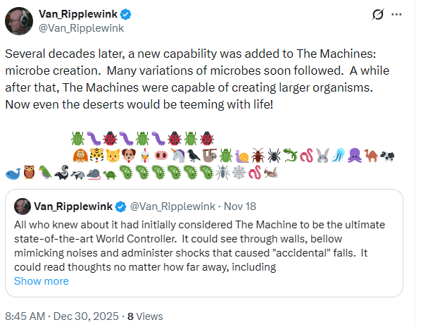

"I woke up in a Soho doorway,
a policeman knew my name,"
Truth can be stranger than fiction!
He hatched a very tricky plan,
although almost anybody can,
he would fake his death
by holding his breath,
then come back to life in the rescue van.
Was it homicide or suicide?
Who would guess that nobody died?
Much money involved,
It must never be solved!
Eventually, key players have lied.
The plan includes enemy liaison
and some of them did time in prison,
nothing failed
and now he's hailed
as the victim and model citizen.
Or maybe his clever trickery
has caused him blatant misery,
now the sneaks got spying tech
and more victims' lives to wreck,
but also existence as a fallacy.
"A Los Angeles man who later said he was 'tired of walking' stole a steamroller and led police on a five-mile-per-hour chase until an officer stepped aboard and brought the vehicle to a halt."
~ Wendy Northcutt, "The Darwin Awards II"
darwinawards
Osama bin Laden,
a play on words,
made up by lyin'
political turds.
Joseph and Barry,
few folk would heed it,
a fantastic story,
Who did really need it?
We learned to talk . . .
From the closet come the most powerful gaze.
Hitler’s syphilis-ridden dreams almost came true.
How could it happen? By taking control of the media.
An entire country was led by a lunatic?
We must protect our First Amendment,
before sick dreams become law.
Nobody made fun of Hitler??!
~ Perry Farrell
"Ontology is the philosophical study of being. It is traditionally understood as the subdiscipline of metaphysics focused on the most general features of reality."
~ Wikipedia
entomology: the study of insects
@totally80s Porky’s (1981) Here’s the whole scene so the end is in context. CLASSIC! Enjoy 💥 #80s #ilovethe80s #porkys #80sbaby #80smovie ♬ original sound - 🅵🅻🅰🆂🅷🅱🅰🅲🅺 80’🆂
Why are some people quick to deny there's any spying?
In animation and film, "Mickey Mousing" (synchronized, mirrored or parallel scoring) is a film technique that syncs the accompanying music with the actions on screen, "Matching movement to music",[2] or "The exact segmentation of the music analogue to the picture."
Mickey Mousing
Some writing I did recently . . .
.png)
.png)
.png)
.png)
.png)
.png)
.png)
.png)
.png)
.png)
.png)
.png)
.png)
.png)
.png)
.png)

A big deal to the spies is never quitting. I think it goes with the concept of forever. Like never coming out or when the Hitler Youth got mad that Hitler got a girlfriend. Diehards?